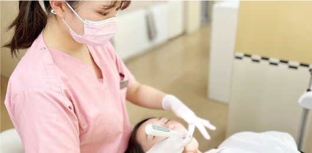
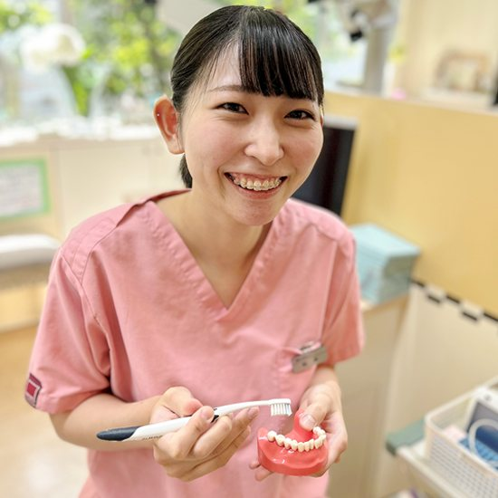
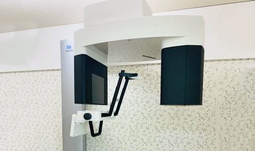
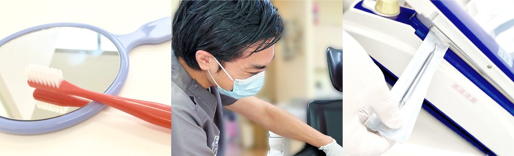
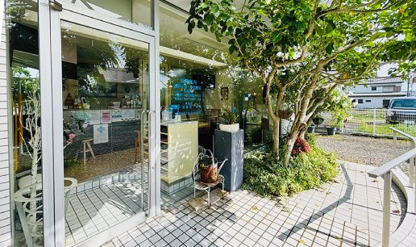
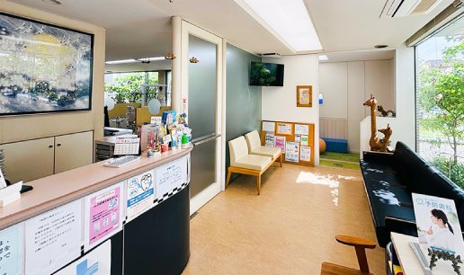
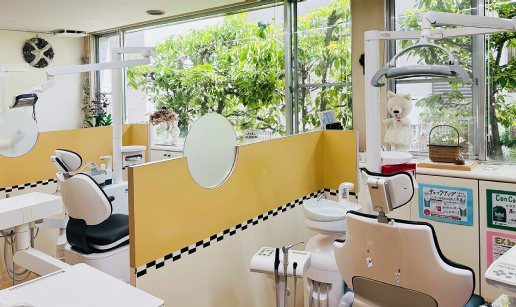
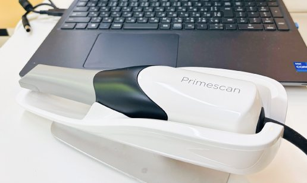

お知らせ
- ホームページをリニューアルしました。例
- 年末年始の休診日：12月29日〜1月5日例
- マイナ保険証をご利用いただけます。
竹内歯科医院の特徴
「痛くない・怖くない・嫌いにならない」歯科医院をめざして、患者さまの立場に立った診療を心がけています。

予防を大切にする歯科医院
定期的なメンテナンスは健康長寿の秘訣。国家資格をもつ歯科衛生士が担当制で、歯みがきのコツや歯ブラシ選びまでお伝えします。

痛みに配慮した治療
表面麻酔や電動麻酔器を使い、できるだけ痛みを抑えた治療をご提案。お子さまには無理をせず、まずは医院の雰囲気に慣れてもらうところから始めます。

徹底した衛生管理
コップ・エプロン・グローブは患者さまごとに交換。器具は高圧蒸気滅菌器で滅菌し、滅菌パックで個別に管理しています。

保育士による無料託児
小さなお子さま連れでも安心。治療中は専任の保育士がお子さまをお預かりします（完全予約制）。

ご自宅への訪問診療
通院が難しい方のご自宅へ伺い、入れ歯の調整や口腔ケアを行います。対応エリアは蟹江町内全域です。

CTなどの設備
歯科用CT・レントゲン・口腔内スキャナーを備え、お口の状態を詳しく確認したうえで、分かりやすくご説明します。
診療案内
むし歯・歯周病の治療から、予防、入れ歯、お子さまの歯並びまで幅広く対応しています。

一般歯科
むし歯・歯周病の治療。生活習慣も含めてお話しし、歯周病と全身の病気との関わりもご説明します。
小児歯科
フッ素塗布や定期検診、歯並びのご相談。嫌がるお子さまに無理な治療はしません。
予防歯科
担当の歯科衛生士による定期メンテナンス。むし歯や歯周病を「治す」前に「防ぐ」ことを大切にしています。
予防矯正
乳歯の時期からあごの成長を促し、歯がきれいに並ぶスペースをつくる矯正です。食育のご相談も。
メタルフリー
古い銀歯を、金属を使わない白い詰め物に置き換えます。即日での修復も可能です。
ホワイトニング
医院で行うホワイトニングと、ご自宅で行うホームホワイトニングをご用意しています。
入れ歯
保険の入れ歯から、薄くて丈夫な金属床の入れ歯まで。「噛むこと」をあきらめないでください。
インプラント
あごの骨に人工の歯根を埋め込み、歯を補う治療です。適切なメンテナンスで長くお使いいただけます。
訪問診療
通院が困難な方のご自宅へ伺います。入れ歯の調整や口腔ケアなど。蟹江町内全域に対応。
※自費診療の内容・費用・リスクについては、診療前に詳しくご説明します。料金表ページを追加予定
ごあいさつ・院長紹介
「自分の歯で、一生おいしく食事を」
蟹江町で開業して38年。これまで多くの患者さまと向き合う中で、歯を「治す」だけでなく「守る」ことの大切さを実感してきました。お口の健康は、全身の健康につながります。
当院では歯科衛生士と連携し、予防を中心とした診療に取り組んでいます。痛くない・怖くない・嫌いにならない、そして「通い続けたい」と思っていただける歯科医院であり続けたいと考えています。
院長 竹内 章文章は仮


竹内 章Akira Takeuchi
- 愛知学院大学 歯学部 卒業
- 奈良県立医科大学 口腔外科学 勤務
- 愛知県内の歯科医院に勤務
- 蟹江町にて竹内歯科医院を開業

竹内 啓太Keita Takeuchi
- 愛知学院大学 歯学部 卒業
- 愛知学院大学 研修課程 修了
- 医療法人 もみの木歯科 勤務
- 竹内歯科医院 勤務
お子さま連れでも、
ご自身の治療に集中できます。
「子どもがいるから歯医者に行けない」というお母さん・お父さんのために、保育士による無料の託児サービスをご用意しています。治療中は専任の保育士がお子さまをお預かりします。
ご利用の際は、事前にお電話でご予約ください。対象年齢・受付曜日は要確認
託児を予約する初めての方へ
ご予約から治療までの流れと、ご来院時にお持ちいただくものをご案内します。
ご来院の流れ
- お電話でご予約0567-96-0085 までお電話ください。痛みがある場合もお気軽に。
- 受付・問診票のご記入気になること、ご希望をお聞かせください。
- 検査・カウンセリングCT・レントゲン等で確認し、画像を見ながらご説明します。
- 治療・メンテナンスご納得いただいてから治療を始めます。治療後は定期検診へ。
お持ちいただくもの
- マイナ保険証
- お薬手帳（お持ちの方）
- 受給者証（お持ちの方）
- 紹介状（お持ちの方）
マイナ保険証をお持ちでない方は、資格確認書または有効期限内の健康保険証をお持ちください。いずれもない場合は自費診療となります。マイナ保険証をご利用の場合、限度額認定証は不要です。
院内・設備紹介
緑の見える明るい院内で、リラックスしてお過ごしください。







診療時間・アクセス
| 診療時間 | 月 | 火 | 水 | 木 | 金 | 土 | 日 |
|---|---|---|---|---|---|---|---|
| 9:30〜12:30 | ● | ● | ● | ／ | ● | ● | ／ |
| 14:30〜19:30 | ● | ● | ● | ／ | ● | ★ | ／ |
★土曜日は18:00まで 休診日：木曜・日曜・祝日
最終の受付時間は、終了30分前となります。
- 住所
- 〒497-0034
愛知県海部郡蟹江町本町4-12
（ヨシヅヤ蟹江専門店館 向かい） - 電話
- 0567-96-0085
- 駐車場
- あり（医院の表・裏）台数を記入
- 電車
- 近鉄・JR 蟹江駅より所要時間を記入